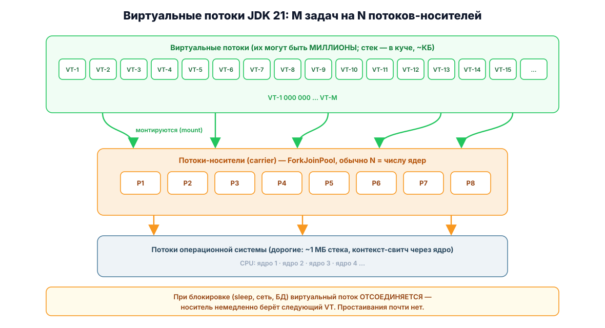

Виртуальные потоки (JDK 21)
Project Loom: потоки, которых можно создать миллион
Проблема «поток на запрос»
Классический поток Java (Thread) — обёртка над потоком операционной системы: ~1 МБ стека, дорогое создание (~1 мс), контекст-свичинг через ядро. Реально их держат сотни, максимум тысячи — и сервер упирается в потолок, даже когда CPU свободен, а потоки просто ждут сеть или базу данных.
Виртуальный поток (JDK 21, JEP 444) — поток, управляемый самой JVM: стек растёт в куче по мере необходимости (килобайты), при блокировке он «слезает» с потока-носителя (carrier thread), освобождая его для других задач.

Создание
// Способ 1: сразу запустить
Thread vt = Thread.startVirtualThread(() ->
System.out.println("Привет из виртуального потока " + Thread.currentThread()));
// Способ 2: через билдер
Thread t = Thread.ofVirtual()
.name("worker-", 0) // имена worker-0, worker-1, ...
.start(() -> doWork());
// Способ 3: неиспользованный платформенный поток для сравнения
Thread pt = Thread.ofPlatform().name("platform-1").start(() -> doWork());
t.join(); // дождаться завершения — работает как обычноExecutor: поток на задачу, без пула
Главный антипаттерн Loom — пулить виртуальные потоки не нужно. Они настолько дешёвые, что создаются на каждую задачу:
// 100 000 задач с блокировкой по секунде — обычная JVM-машина справляется
try (var executor = Executors.newVirtualThreadPerTaskExecutor()) {
List<Future<String>> futures = IntStream.range(0, 100_000)
.mapToObj(i -> executor.submit(() -> {
Thread.sleep(Duration.ofSeconds(1)); // блокировка БЕЗ занятия потока ОС
return "task-" + i;
}))
.toList();
for (var f : futures) f.get();
} // close() ждёт завершения всех задач — как и у обычных executor'ов# Сравнение на машине с 8 ядрами (время примерно):
# Пул из 200 платформенных потоков, 100k задач по 1с: ~500 секунд
# newVirtualThreadPerTaskExecutor, те же 100k задач: ~1-2 секунды (!)Что изменилось в коде сервера
// Простой HTTP-сервер: был пул на 200 потоков — стал поток на соединение
HttpServer server = HttpServer.create(new InetSocketAddress(8080), 0);
server.setExecutor(Executors.newVirtualThreadPerTaskExecutor()); // ← вся настройка
server.createContext("/api", exchange -> {
String json = slowDatabaseQuery(); // можно писать блокирующий код!
exchange.sendResponseHeaders(200, json.length());
try (var os = exchange.getResponseBody()) { os.write(json.getBytes()); }
});
server.start();Стиль программирования остаётся простым последовательным (как в 2005-м): блокирующие вызовы JDBC, HTTP-клиента, Thread.sleep больше не «съедают» дефицитные ресурсы. Асинхронные цепочки CompletableFuture и реактивные фреймворки во многих сценариях становятся не нужны. Полный рабочий пример — HTTP-сервер на JDK 21.
Правила и подводные камни
| Тема | Рекомендация |
|---|---|
| Пулинг | Не пулите виртуальные потоки. newVirtualThreadPerTaskExecutor() на каждую задачу |
| Именование | Не храните долгоживущие ссылки; для отладки задавайте префикс имён через Thread.ofVirtual().name("prefix-", 0) |
| ThreadLocal | Работает, но тяжело при миллионах потоков. Замена — Scoped Values (preview, JEP 446) |
| Pinning (прикрепление) | Внутри synchronized-блока поток не может отмонтироваться. Для блокирующих секций используйте ReentrantLock (в JDK 24 pinning в synchronized устранён, JEP 491) |
| Ограничение параллелизма | Нужен лимит к внешнему ресурсу (например, 10 соединений к БД)? Используйте Semaphore, а не пул потоков |
| CPU-задачи | Для тяжёлых вычислений виртуальные потоки не дают выигрыша — там по-прежнему уместен ForkJoinPool/parallelStream |
// Демонстрация pinning — как НЕ надо:
synchronized (lock) {
httpClient.send(request, handler); // поток прикреплён к носителю всю блокировку!
}
// Как надо:
private static final ReentrantLock lock = new ReentrantLock();
lock.lock();
try {
httpClient.send(request, handler); // при блокировке поток отмонтируется
} finally {
lock.unlock();
}Проверить прикрепление: java -Djdk.tracePinnedThreads=full MyApp — стектрейсы прикреплённых потоков печатаются в консоль.
Structured Concurrency (preview, JEP 453)
Группирует связанные подзадачи в одну единицу работы: если одна упала — отменяются остальные; если отменили родителя — отменяются дети.
// Запрос «данные пользователя» + «каталог» параллельно, ждём оба
try (var scope = new StructuredTaskScope.ShutdownOnFailure()) {
Subtask<User> user = scope.fork(() -> findUser());
Subtask<Order> order = scope.fork(() -> fetchOrder());
scope.join(); // ждём оба подзадача
scope.throwIfFailed(); // пробрасываем исключение, если было
return new Response(user.get(), order.get());
} // закрытие scope отменяет незавершённые подзадачиКогда что использовать
| Задача | Инструмент |
|---|---|
| Много блокирующего I/O (HTTP, БД, файлы) | Виртуальные потоки |
| Тяжёлые вычисления (рендеринг, ML-инференс) | ForkJoinPool / parallelStream() (число потоков ≈ числу ядер) |
| Периодические задачи | ScheduledExecutorService (можно на виртуальных потоках с JDK 21) |
| Конвейеры с отменой и таймаутами | Structured Concurrency (preview) + виртуальные потоки |